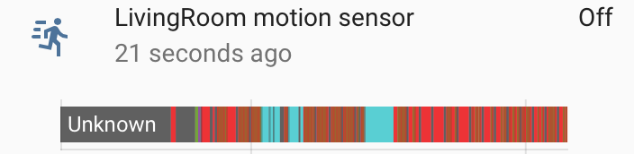

Motion detection for D-Link DCS-930L Camera
 Atsuko
Ito
Atsuko
Ito
me@yottatsa.name
@yottatsa on LinkedIn Papers
It's not about configuration, and not about integration, so probably it's about hardware support.

Preface
D-Link DCS-930 is super cheap and reasonably usable out-of-the-box camera. I've bought one long time ago and mounted it outside, screwed it to a window frame in a flat on 19 floor to monitor parking spaces. This camera survived 3 russian winters, but then I moved to London, and start using it as home security camera, mostly to look after my pet cat.
This camera (and I believe many other D-Link cameras as well) has neat cloud service to stream video, which is also push motion and noise alerts.
Complication
When I started playing with HASS, this camera was first one I wanted to intergate. l googled some forums quickly and found that camera has no consistent API, just bunch of random endpoints. Tutorials are only contains streams URLs and control handlers from UI.
I've also tried to mitmproxy camera's traffic in both directions, and found that folks from D-Link employed Certificate Pinning, so it didn't happen.
Sadly, IFTTT is also not working for this camera for some reason.
I've tried to debug cloud app for this, where I found that MJPEG stream seems containing some data in Date header, but it didn't really correlate with motion.
Date: 07-01-2018 11:00:43 PM IO_00000000_PT_005_000
Date: 07-01-2018 11:00:43 PM IO_00010000_PT_005_000
Yet I desperately wanted to hack it, so I started googling any API endpoint for all D-LInk cameras from same price bracket. There I found some mentions about NIPCA-API, Network IP Camera Application Programming Interface.
WIN
I found that most of endpoints I've found before are in that manual. Particularly, it contained two endpoints, /config/motion.cgi, /config/notify.cgi and /config/notify_stream.cgi, which has motion detection config, statuses of all events, and feed of notification information (long-polled) respectively
For some reason, some of handlers from /config returns 403 Forbidden (probably not implemented), and easiest one, /config/notify.cgi was one of them (motion config is inaccessible for me too).
I accidentally found that /motion.cgi contains needed info, even in another format. Also, long-poll version of notification stream is also working.
mic=on
md1=off
audio_detected=off
keep_alive
md1=on
Implementation
I've used upnp component/sensor as a source (because I patched it before), and overloaded standard MjpegCamera.
Sadly, my camera contains no specific UPNP services or devices, so I'm trying to poll 'magic' URL /common/info.cgi using presentationURL, until I find properly responding device.
I still not figured out how to use discovery framework to ask the password interactively, so I'm storing it in config.
Please test github.com/yottatsa/hass_nipca! Discussion is open on the community forum.
This work is licensed under a Creative Commons Attribution-ShareAlike 4.0 International License.